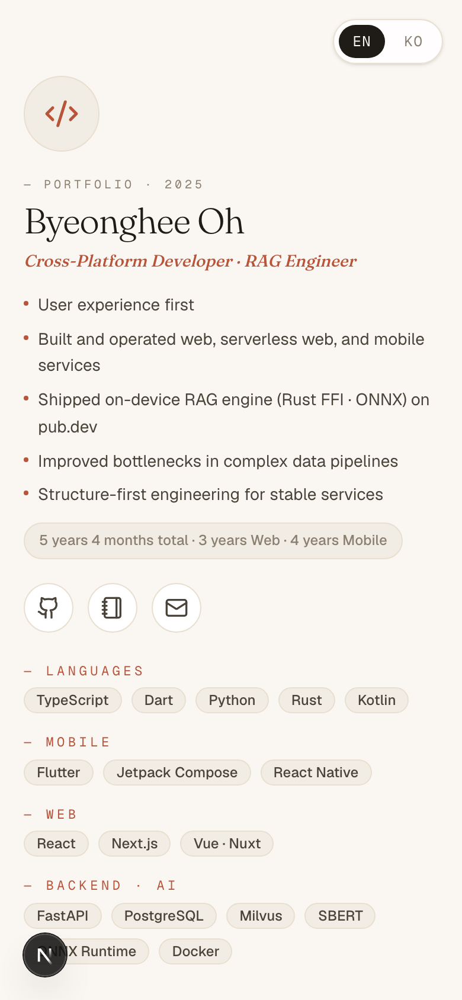
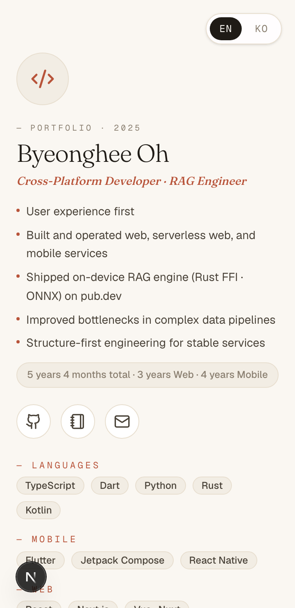
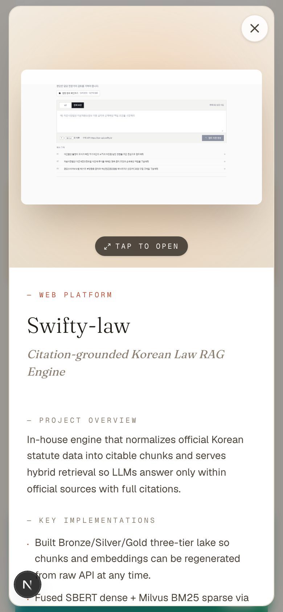
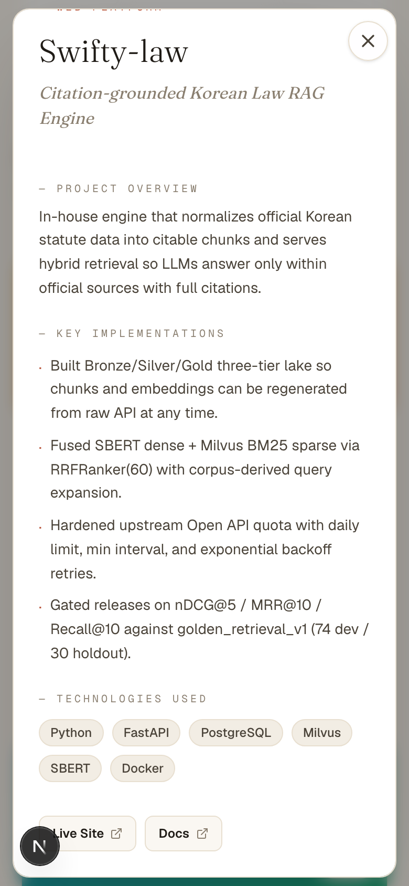
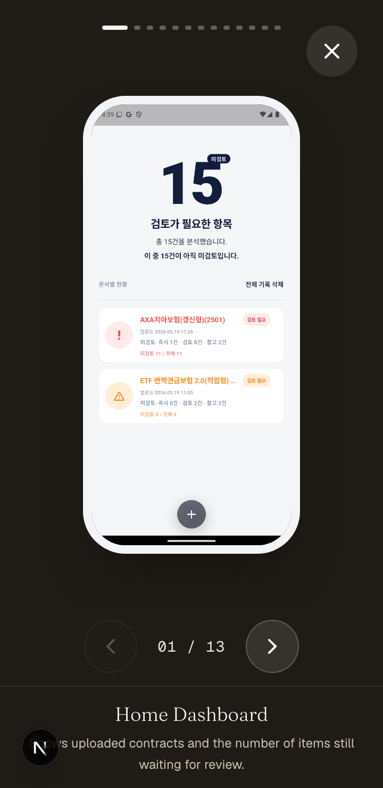
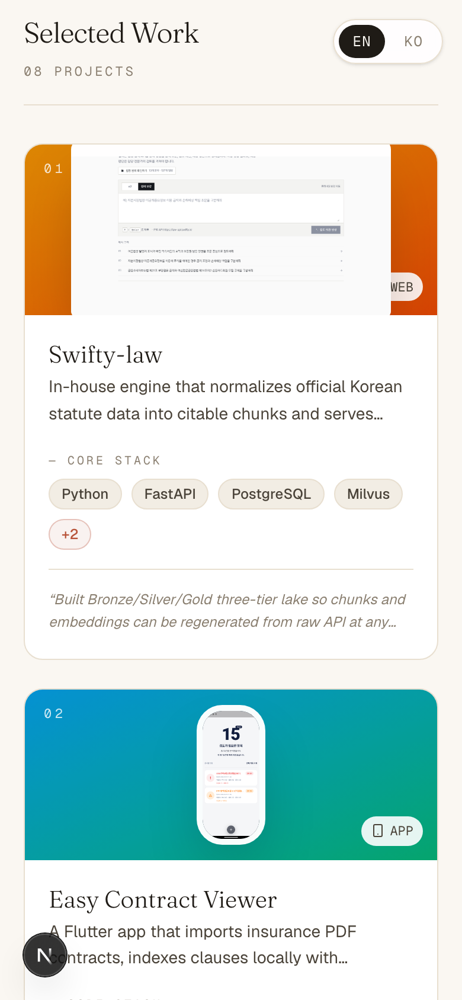

Fix Report
모바일 반응형 수정 결과
분석 보고서에서 P1/P2로 잡은 모바일 모달, 첫 화면 밀도, 카드/섹션 헤더, 프레젠테이션 오버레이 문제를 우선 수정했다. 변경 범위는 포트폴리오 표시 컴포넌트와 보고서용 캡처 스크립트로 제한했다.
개선
962px -> 846px
390px 모바일에서 Open Source 섹션 시작 위치가 앞당겨졌다.
개선
0 visible
프로젝트 모달이 열리면 EN/KO 전역 스위처가 숨겨진다.
개선
top 20px
모달 스크롤 후에도 닫기 버튼이 viewport 상단에 유지된다.
후속 개선
8 / 8
프로젝트 카드가 모두 실제 preview image와 keyboard-operable button root를 갖는다.
접근성
2 dialogs
프로젝트 모달과 프레젠테이션 오버레이에 이름, 설명, focus trap을 부여했다.
수정한 것
| 영역 | 변경 | 파일 |
|---|---|---|
| 모달 레이어 | 모달 오픈 중 전역 언어 스위처 숨김, 모바일 닫기 버튼 fixed 처리, 모달 max-height를 100dvh 기준으로 보정 |
Portfolio.tsx, LanguageSwitcher.tsx, ProjectModal.tsx, globals.css |
| 첫 화면 밀도 | 모바일 avatar, heading, gap, chip padding, header padding을 줄이고 bullet 줄바꿈/정렬을 보정 | ProfileHeader.tsx |
| 섹션/카드 | 모바일 section header를 세로 정렬로 전환하고 카드 thumbnail/content spacing을 축소 | OpenSourceBanner.tsx, ProjectGrid.tsx, ProjectCard.tsx |
| 프레젠테이션 | 모바일 프레임 높이를 dvh 기반으로 제한하고 nav/caption 영역을 고정 높이로 안정화 |
DeviceFrame.tsx, PresentationOverlay.tsx |
| 프로젝트 카드 후속 | 아이콘 중심 썸네일을 실제 첫 화면 screenshot preview로 교체하고, 카드 root를 button type="button"으로 전환 |
ProjectCard.tsx |
| 접근성 후속 | 상세 모달과 프레젠테이션 오버레이를 role="dialog", aria-modal, aria-labelledby, aria-describedby로 연결하고 초기 focus와 focus trap을 추가 |
ProjectModal.tsx, PresentationOverlay.tsx, useFocusTrap.ts |
| 프레젠테이션 진입 | 디바이스 preview를 실제 button으로 전환하고 Enter/Space 키 활성화를 같은 전환 경로로 연결 |
DeviceFrame.tsx, Portfolio.tsx |
접근성 검증
| 항목 | 결과 | 확인값 |
|---|---|---|
| 프로젝트 상세 모달 | 통과 | 활성 focus: Close Swifty-law project details, label: Swifty-law, description length: 173 |
| 프레젠테이션 오버레이 | 통과 | 활성 dialog 수: 1, 초기 focus: Exit presentation mode, label: API Landing |
| 키보드 focus trap | 통과 | Shift+Tab: 다음 화면 버튼으로 순환, Tab: 닫기 버튼으로 복귀 |
| focus 복귀 | 통과 | 프레젠테이션 종료 후 preview 버튼, 모달 종료 후 원래 프로젝트 카드로 focus 복귀 |
Trade-off
- 모바일에서는 프로필과 카드의 여백이 줄어들어 데스크톱의 느슨한 감성은 약해졌지만, 프로젝트 접근 속도는 좋아졌다.
- 모달이 열린 동안 언어 전환은 숨겨진다. 대신 닫기/상세 읽기 흐름의 안정성을 우선했다.
- 프레젠테이션의 모바일 device mockup은 이전보다 작아졌다. 대신 네비게이션과 caption이 화면 안에 안정적으로 남는다.
- 프로젝트 카드 썸네일이 실제 화면 중심으로 바뀌면서 정보성은 좋아졌지만, 각 프로젝트의 스크린샷 품질 차이가 카드에서 더 직접적으로 드러난다.
- 디바이스 preview button에 명시적인
Enter/Space처리도 추가했다. native button 기본 동작보다 코드가 조금 늘었지만 브라우저/테스트 환경에서 키보드 진입 경로가 더 명확해졌다.
캡처






후속 추천
- 모바일에서 tech stack 전체를 항상 펼칠지, 핵심 stack + 펼치기 방식으로 바꿀지 한 번 더 제품 관점에서 결정하면 좋다.
- 다음 접근성 후속은 색 대비 자동 점검과 heading landmark 구조 점검으로 넘어가는 것이 좋다.